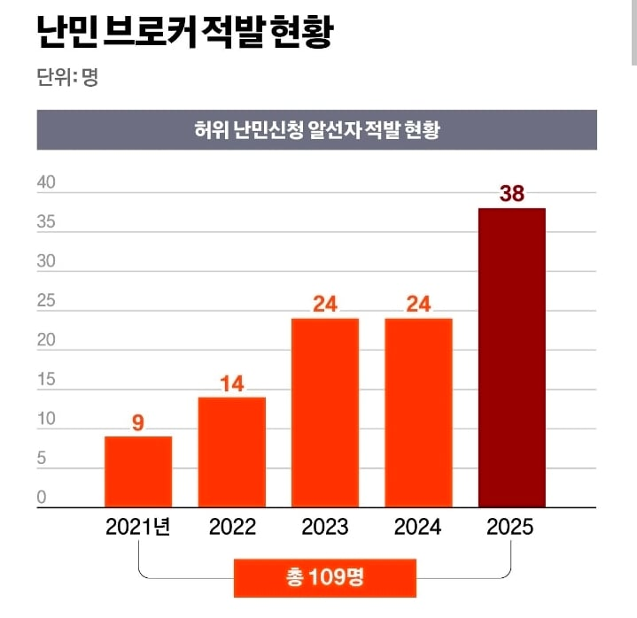
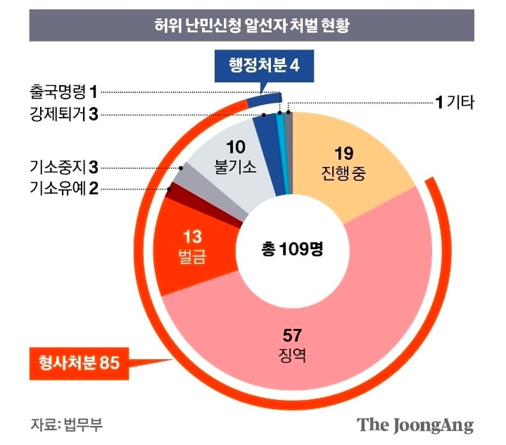
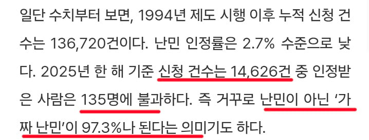
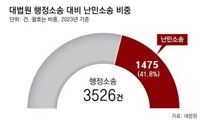

우리나라는 난민 인정 잘 안해주지 않나? ㅇㅇ인정 잘 안해줌
근데 난민 신청하면 심사가 끝나기 전까지 체류가능
게다가 무제한으로 즐길 수 있음
실제로 2013년부터 지금까지 체류중인 난민 신청자가 있음

행정 소송에서 차지하는 비율이 무려 41.8% 임
1년에 겨우 38명 아니냐라고 할 수 있는데
브로커 한명 당 가짜난민 알선을 한두명 하는게 아님
난민 별로 받지 않는 우리나라도 이 모양임
게이드립치던 병신도 난민 인정 받았다가 취소 됨
75만원이면 브로커가 일처리 과정에 쓰는거도 있을테니 쳐먹는돈은 그거보다 좀 더 적을텐데
대충 50~60쳐먹을라고 한국에 어떤새낀지도모르는 난민을 쳐끌어오는건가;;;
난민이 브로커 일가족 묻지마로 ㅈㄴ찔러죽이고 집까지 문따고 털어가야 정신차릴듯